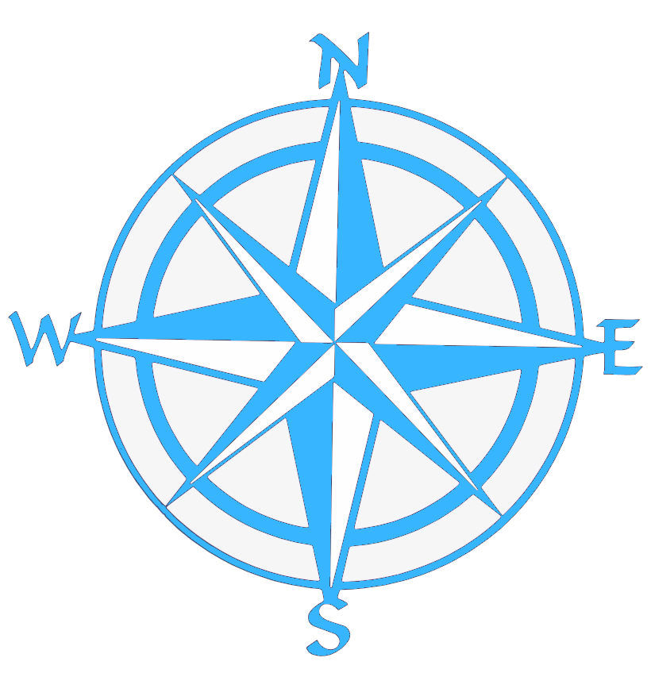

 |
Ben's Guide to Sailing in Boston |
| Question | Answer |
|---|---|
What is sailing? |
It is the art and practice of using various techniques to move a boat using wind. It can be done as a hobby, sport, or transportation. |
Do I need to be strong to sail? |
Physical strength can be helpful for handling equipment, but strong technique, teamwork, and communication are far more important for sailing. |
What should I wear for sailing? |
Wear clothing in multiple layers that's water resistant, including gloves and slip-resistant boots. You may also be exposed to the sun, so a hat, sunscreen, and sunglasses are also needed. |
Do I need a license to sail? |
In the United States, it may depend on state laws. It's probably a good idea to undergo training anyway to earn a boating safety certificate for that reason. |
What is the difference between a sailboat and a yacht? |
Sailboats rely on wind for movement while yachts use engines as well. Yachts are more luxurious and larger than sailboats. |
Is sailing safe? |
It is safe when done with safety guidelines in place. Be mindful of safety gear, weather, and proper training. |
What is tacking? |
It is a sailing technique of turning the bow (front) of the boat to change the direction of a sailboat when sailing upwind or the wind's angle. |
What is gybing? |
Similar to tacking, but you are turning the stern (back) of the boat through the wind instead. It is done when sailing downward. |
Can I sail in any weather? |
It is not recommended, especially if you're a beginner. There should be wind, but not too much wind to avoid getting into overwhelming situations. Heavy weather can also make it challenging. Always refer to weather and sea forecasts as rough seas can also make sailing difficult. |
What safety equipment do I need? |
Quite a bit, actually. Life jackets, a VHF radio, first aid kit, signaling devices like flares, fire extinguisher, bailer, navigation lights, and safety tether. They will make a difference in dangerous situations. |
How do I read a nautical chart? |
Look for symbols and abbreviations and what they mean. As well as latitude, longitude, depth indications, navigational aids, and compass rose. |
What is a mooring? |
It is securely tying your boat to a fixed structure, like a mooring ball. |
How do I dock a sailboat? |
Approach the dock slowly and against the wind and current. Then place fenders on the side of the boat to contact the dock and secure the lines to it. |
What are the sailing knots? |
Some of them are: bowline, clove hitch, reef knot, sheet bend, and cleat hitch. Learn More By Clicking Here. |
What does "man overboard" mean? |
It means a member of the ship is off the ship and needs to be rescued. Use the steps of shouting the phrase, keeping the person afloat, and working as a team to get them back on the boat. |
What kind of boat should I start with? |
It is recommended to look for a keelboat, dinghies, or a smallboat program first. Then work your way up to a yacht if that's your goal. |
How long does it take to learn how to sail? |
It depends on the structure of the program. It typically takes a few days to feel comfortable sailing in easier conditions. |
What is being seasick? Will I get seasick? |
It is motion sickness because of a boat's motion on water. You may get seasick, but don't be alarmed. It's common if you're not used to it, but you will adapt to it over time. |